Hey folks,
For the ones who have been following me here for a while, know I’m passionate about Azure and DevOps (and yes, also Azure DevOps, lol). But to be honest, I’ve been eyeing to another Azure Service for a while, Azure Chaos Studio, available in public preview.
This article shares an introduction to Chaos Engineering, as well as walks you through the first steps it takes to set up Azure Chaos Studio, create experiments and validate the outcome.
Let’s have a look.
Introduction to Chaos Engineering
Chaos Engineering is:
the discipline of experimenting on a system in order to build confidence in the system’s capability to withstand turbulent conditions in production.##
Source: https://principlesofchaos.org/
Chaos Engineering is all about experimenting – typically against production-running systems– to identify and find loopholes, pitfalls if you want, in the way the system is running, which makes the system less reliable. The more loopholes we can identify upfront, the more confidence we can have in the system’s reliability. By introducing a series of event simulations, whether based on real incidents happened earlier or based on simulated outages that could happen, we target our workloads and learn from its impact.
The curious case of CPU Pressure - Part I
Let’s take CPU pressure as an easy use case.
Imagine a workload is running fine for months, with an average CPU load that’s keeping the system running healthy. Suddenly, a CPU spike occurs and crashes the application. Apart from troubleshooting the root cause of the CPU spike, probably a task for engineering or development teams, it might be equally relevant to find out why the system reacted with a crash of the application. Even more so, if we could have simulated a CPU spike happening, our engineering and development teams could have focused on mitigating the problem by releasing a fix, updating the architecture to an even more fault-tolerant setup.
Don’t get me wrong though, as Chaos Engineering is a lot more than injecting outage triggers (faults) to bring production environments to their knees. There’s a lot more complexity involved, especially since an outage is typically not caused by one single failure, but more of a series of incidents.
The curious case of CPU Pressure - Part II
Reusing the CPU pressure example, one could consider a scenario where CPU is spiking, because of a latency in database operations, putting a calculation or database update on hold. Or maybe there is a network connectivity issue, by which an operation cannot be written to the database back end, causing so many retry operations, which spikes CPU. So instead of just “simulating” the CPU spike, it is also important to capture all possible side effects that could cause a CPU pressure.
Which – to me – also explains why it’s called an engineering discipline, as there is quite some engineering involved in all the interactions across different systems, components, and workloads.
Now, you might think that Chaos Engineering is the next big thing (maybe even coming after SRE and DevOps?), but yet too revolutionary for your cloud environments. But nothing is more wrong.
Netflix’s Chaos Monkey
In fact, Chaos Engineering has been around for more than ten years already, initiated by software engineers from Netflix around 2008, when they started migrating from on-premises data centers to public cloud data centers. While there are a lot of similarities between managing your own data center and using public cloud, there are also big differences. It was mainly those differences that forced Netflix’s engineers to create services architectures with higher resiliency.
Going through the testing related to this cloud migration resulted in the creation of an internally developed Chaos Orchestration tool around 2010, branded Chaos Monkey, which was publicized as an open source product in 2012. More information on the tool and how to use it is available on GitHub.
Netflix designed Chaos Monkey to allow them to validate the stability of their production-running workloads (the Streaming Service we all use), which was running on Amazon Web Services (EC2 VM Instances). The main purpose of Chaos Monkey was detecting how their systems would respond to critical components being taken down. By intentionally shutting down workloads, it would become clear what weaknesses are present in the total topology and allow the engineering teams to work toward mitigation.
Introduction to Azure Chaos Studio
Azure Chaos Studio is provided as a service, which means you don’t have to deploy your own infrastructure first to get it up and running. Azure Chaos Studio Preview is a fully managed chaos engineering experimentation platform for accelerating discovery of hard-to-find problems, from late-stage development through production. Disrupt your apps and its corresponding Azure resources (Virtual Machines, Network Security Groups, App Services, Cosmos DB, Azure Kubernetes Service, Azure KeyVault and more…) intentionally to identify gaps and plan mitigations before your users or customers are impacted by a problem.
Experiment by subjecting your Azure apps to real or simulated faults in a controlled manner to better understand application resiliency. Observe how your apps will respond to real-world disruptions such as network latency, an unexpected storage outage, expiring secrets, or even a full datacenter outage.
Thanks to Azure Chaos Studio, one can validate product quality where and when it makes sense for your organization. Use the continuously expanding library of faults, which includes CPU pressure, network latency, blocked resource access, and even infrastructure outages. Drive application resilience by performing ad-hoc drills, integrate with your CI/CD pipeline, or do both to monitor production quality through continuous validation.
Avoid the need to manage tools and scripts while spending more time learning about your application’s resilience. Get started quickly with experiment templates and an expanding library of faults—including agent-based faults that disrupt within resources and service-based faults that disrupt resources at the control plane.
Deploying Azure Chaos Studio
-
The first thing you need to check is to make sure the “Microsoft.Chaos” Azure Resource Provider is enabled (registered) in your subscription. To do that, open your Azure portal, and search for Subscriptions.
-
Select the subscription in which you want to enable Azure Chaos Studio. From within the detailed blade, select “Resource Providers” under the Settings pane, and search for “Chaos”. Select “Microsoft.Chaos” and click “Register” in the top menu; give it a few minutes, until the Status column shows “Registered”.
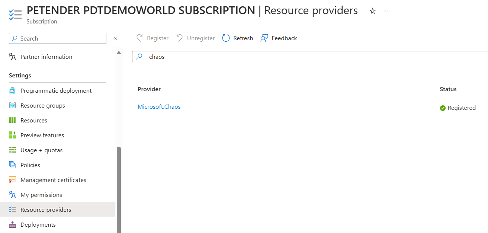
-
Following the Zero Trust concept of least privileges, Chaos Studio requires a User-Managed Identity as Identity security object, to interact with the Azure Resource Targets. To create this, click Create New Resource, and search for User Managed Identity.
-
Complete the necessary parameters in the setup blade:
- Azure Subscription
- Azure Resource Group
- Region
- Name for the Chaos MI object
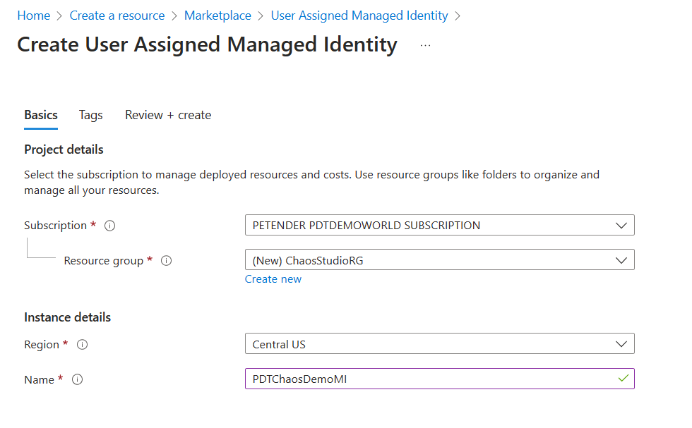
- Chaos Studio relies on Application Insights and underlying Log Analytics WorkSpace to store metadata of the service (my assumption is, that in a later stage, this will be used to store the actual logging of the executed experiments and Target resources’ behavior). From the Azure Portal, select Create New Resource and search for Application Insights.
Specify the necessary parameters for the deployment:
- Azure Subscription
- Azure Resource Group
- Name for the Application Insights resource, e.g. ChaosAppInsights
- Resource Mode: Workspace-based
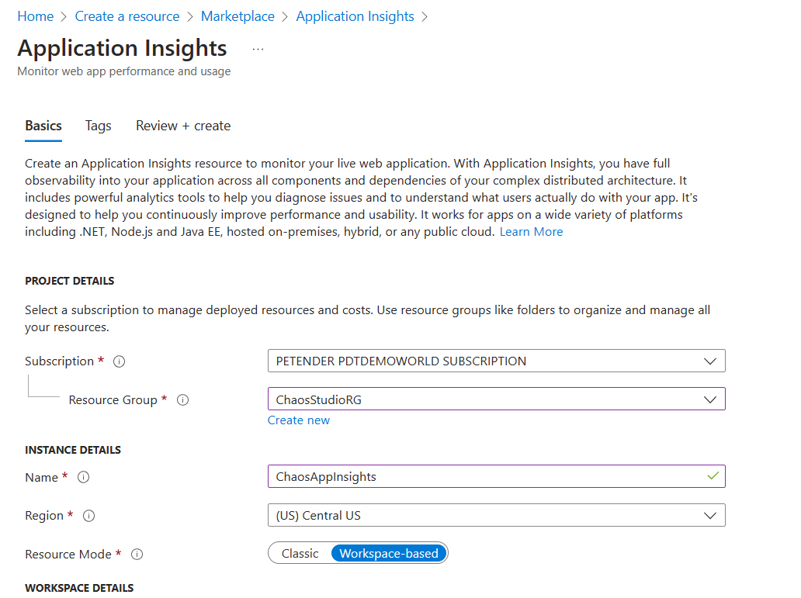
- From the Azure Portal, search for Azure Chaos Studio.
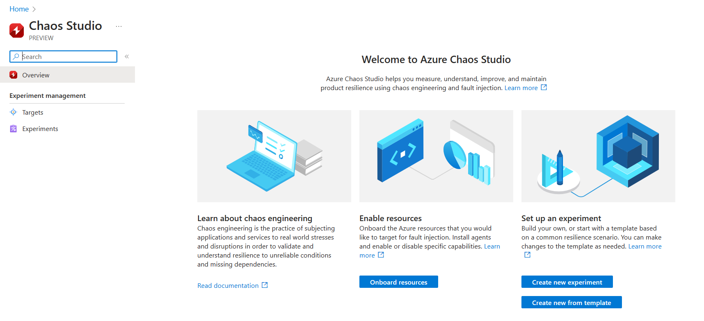
- Select Onboard Resources. This brings you to the Targets section of the blade.
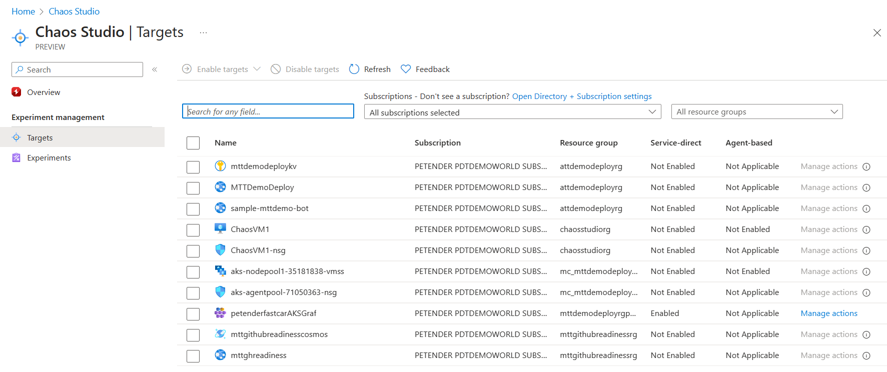
- Here, you can filter for specific subscriptions or specific Resource Groups (or both), where next, you need to select the Azure Resource(s) you want to use as a target. A target can be a Virtual Machine, both Windows and Linux OS are supported, as well as Virtual Machine Scale Sets (VMSS). This approach requires the installation of the Chaos Studio Agent on the VMs as part of the Target setup.
Non-Azure VM services such as App Services, Azure Key Vault, Network Security Groups, Cosmos DB and Azure Kubernetes Service (AKS) rely on the Service-Direct scenario, without the agent dependency.
Onboarding an Azure VM to Chaos Studio
- In this example, I’m going to target a Windows Server Virtual machine, selecting it, which unlocks the “Enable Targets” menu option. From here, select Enable agent-based targets (VM, VMSS) from the menu.
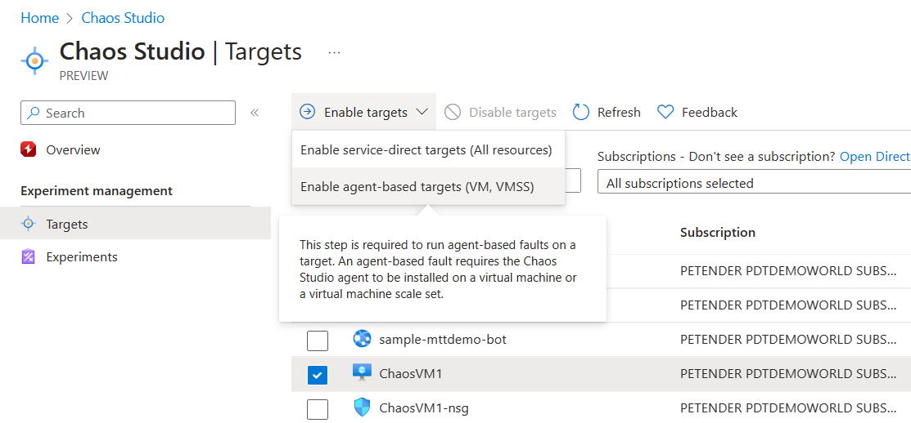
- This will open the Enable agent targets blade. Provide the necessary parameters for the deployment:
- Subscription
- Azure Managed Identity you created in the previous steps
- Application Insights account you created for Chaos Studio
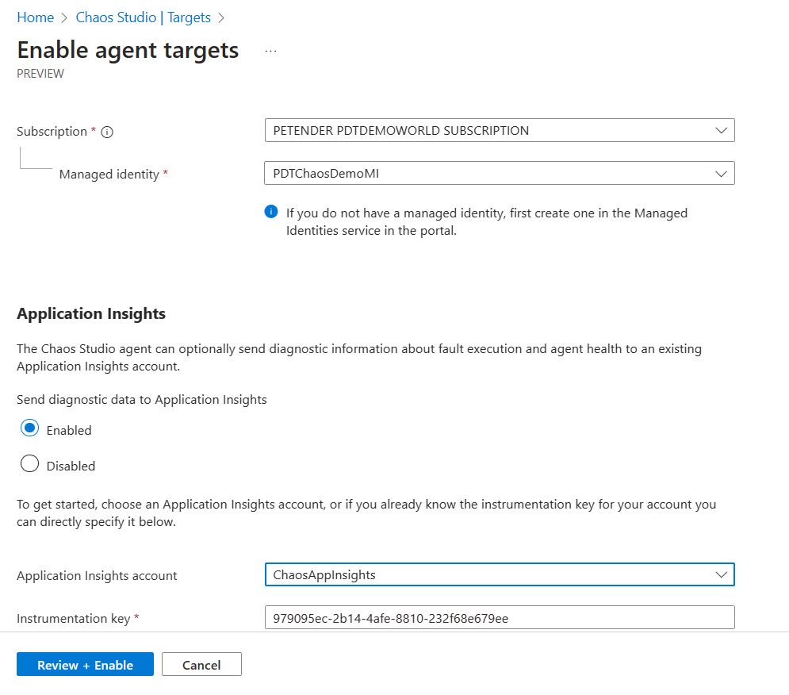
- Wait for the deployment to complete.
Onboarding a non-Azure VM to Chaos Studio
- In this next example, I’m going to target several other Azure Resources as Chaos Target. Starting with a Network Security Group.
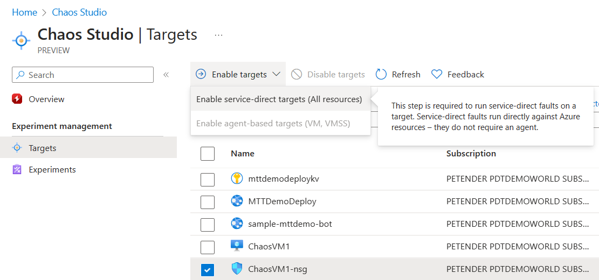
This opens the Enable service direct targets blade. Click Review and Enable to complete the step.
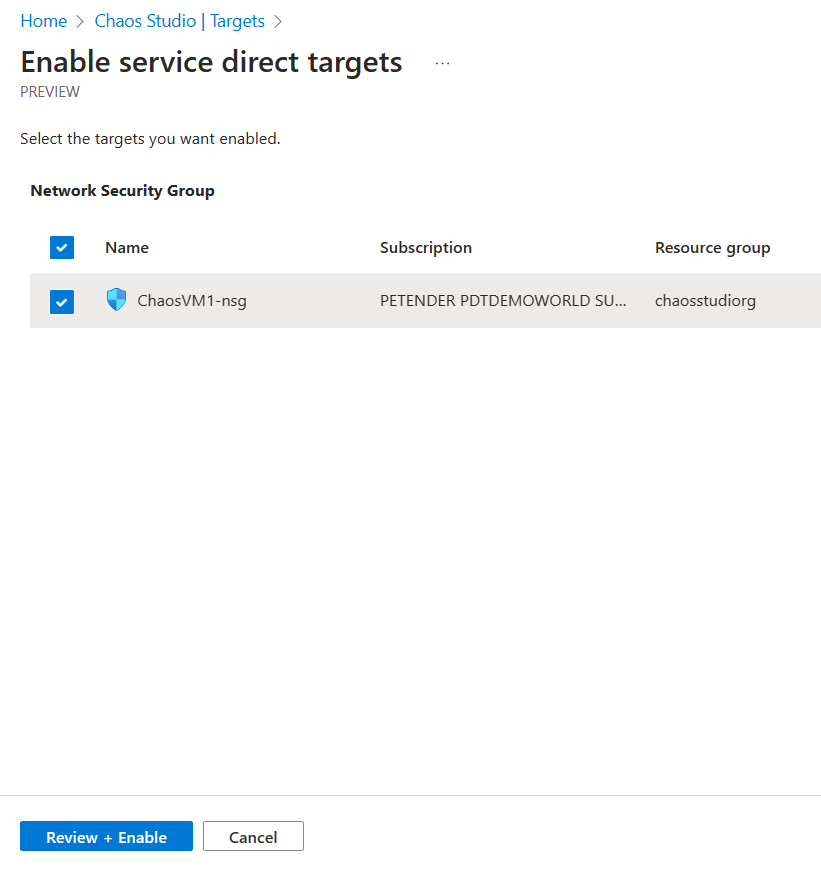
If you want, you can add additional non-Azure VM Resources in this scenario. For example, I included my Azure Kubernetes Service (AKS) resource, as well as Azure Key Vault.
Creating the VM Target Experiment
In this next section, you will learn how to create an Azure VM Experiment and simulating CPU Pressure.
- With the VM Chaos Agent installed, it can now be used as a proper target for a Chaos Experiment. From the Chaos Studio Blade, select Experiments, select New Experiment.
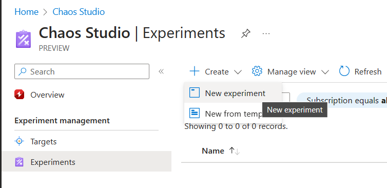
- Under the Basics tab, complete the necessary base information:
- Subscription
- Resource Group
- Name: Unique descriptive name for the experiment, e.g. CPUSpike
- Region of choice
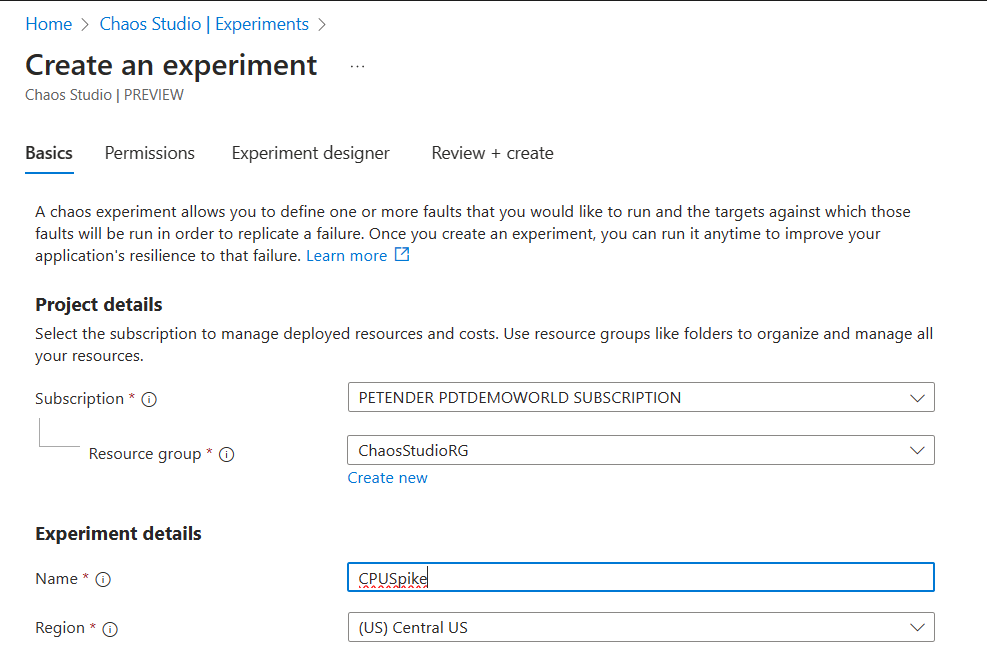
- Click Next to define the Permissions. Here, you allocate a new Managed Identity Identity security object to the experiment itself. Later on, you need to provide the necessary IAM/RBAC (Role Based Access Control) permissions for this Experiment to the Azure Target Resource.
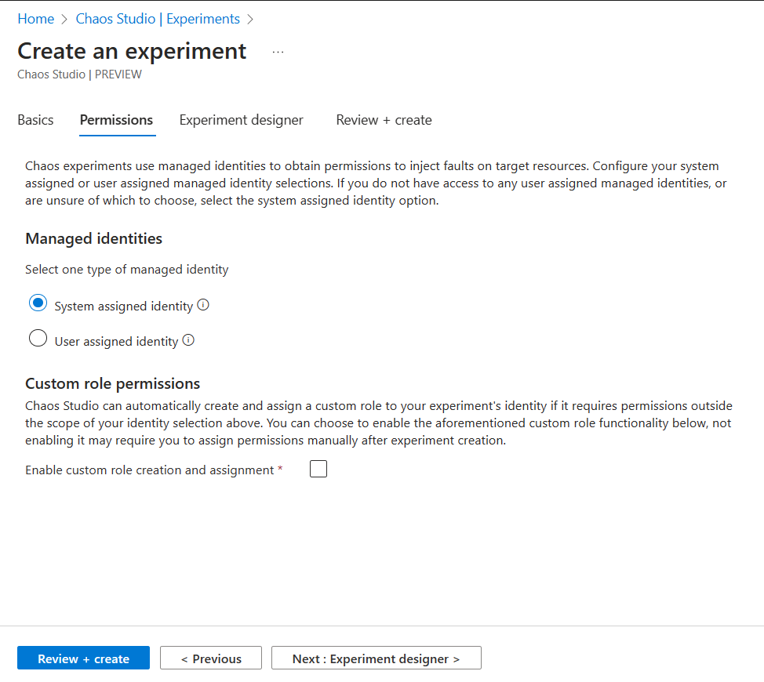
- Click Next to open the Experiment Designer
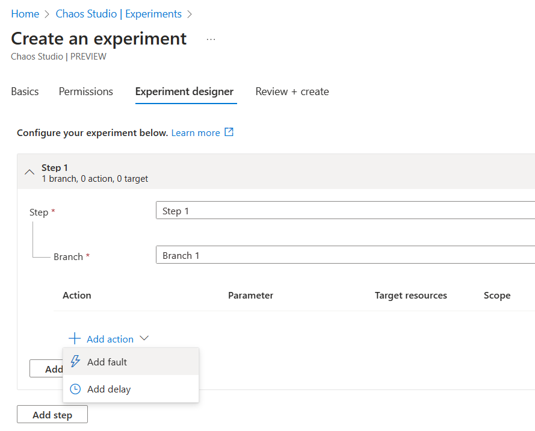
The logical structure is based on Steps, containing Branches. Within a Branch, you specify the actual Fault Action or Delay.
Steps are running in parallel, where Actions are executed Sequential.
Click + Action, and select Add Fault. This opens a list of possible fault injections for all resources.
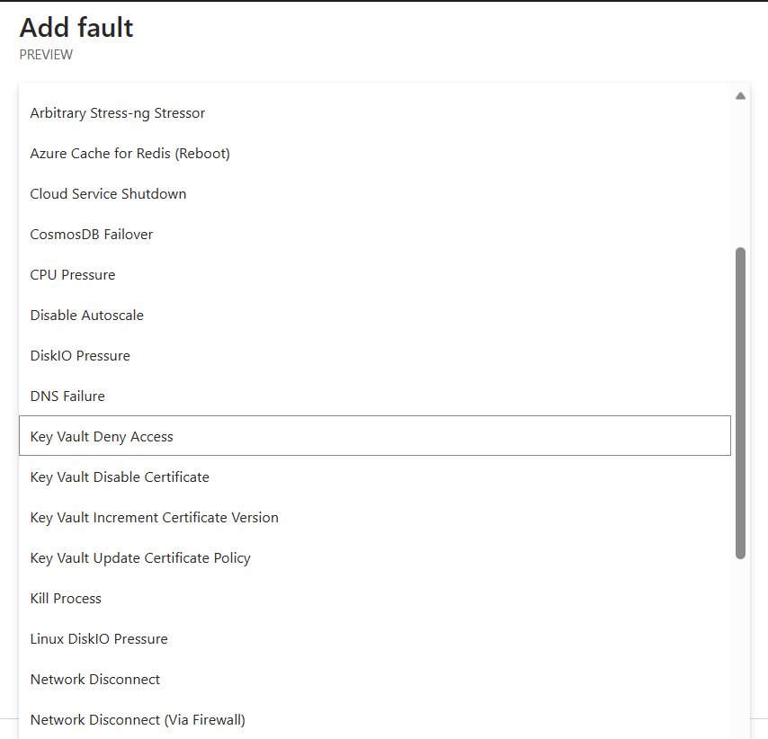
- From the list of faults, select CPU Pressure. Next, specify the Duration parameter (10 minutes seems a fair test) and set pressureLevel to 95, meaning a CPU Pressure of 95% during 10 minutes.
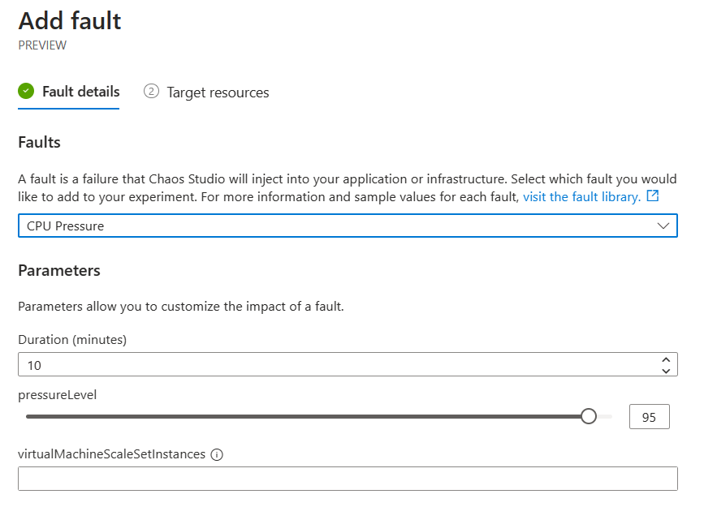
- Next, allocate the Azure Target Resource. In our example, select the VM you deployed earlier as sample target.
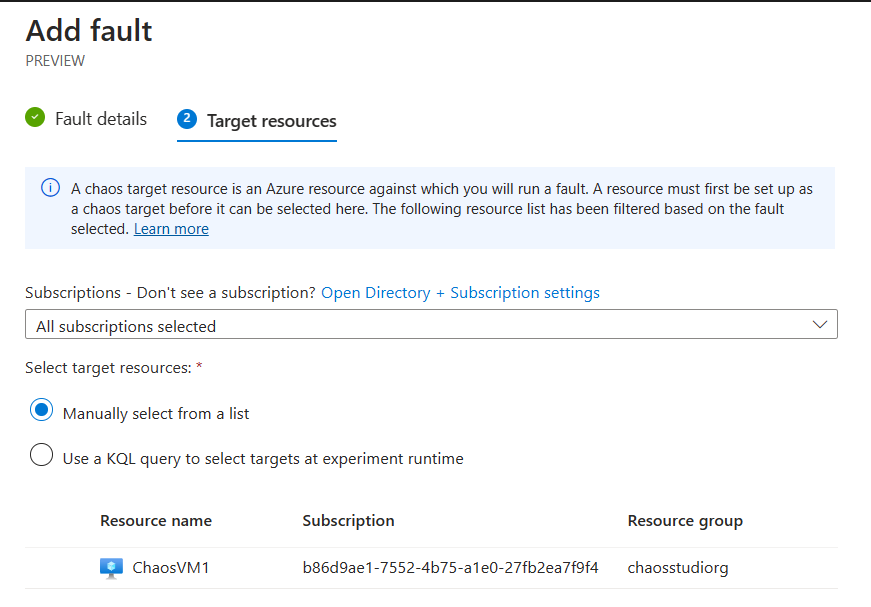
- A new Experiment Resource got created.
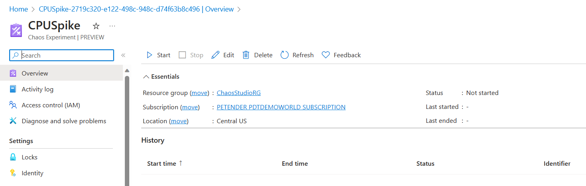
- Before the experiment can run successful, its corresponding Managed Identity needs to have the correct RBAC/IAM permissions on the target resource. Navigate to the Azure VM from the Azure Portal, and select Access Control/IAM.
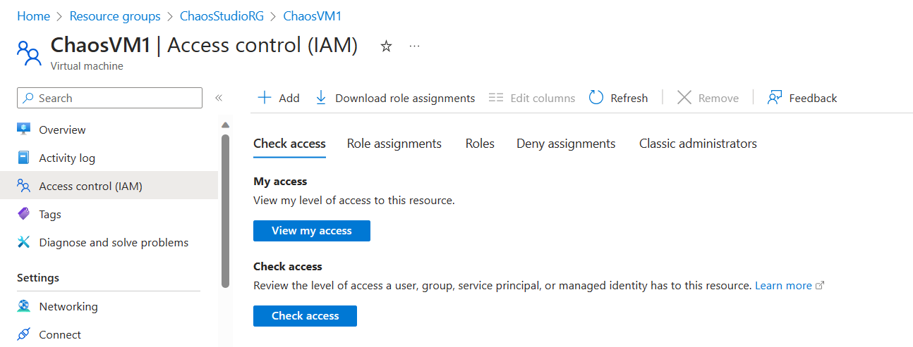
- Different Azure Target Resources require different Chaos Experiment RBAC permissions. For an Azure VM, Reader permissions is sufficient.
Note: for an overview of what RBAC permission is required for each Azure Resource, check this link in the Azure Docs.
From Add Role Assignment, select Reader as Selected Role. In the Assign Access to step, select Managed Identity and open the Chaos Experiment section under the Managed Identity section. Select the CPUSpike Experiment Resource.
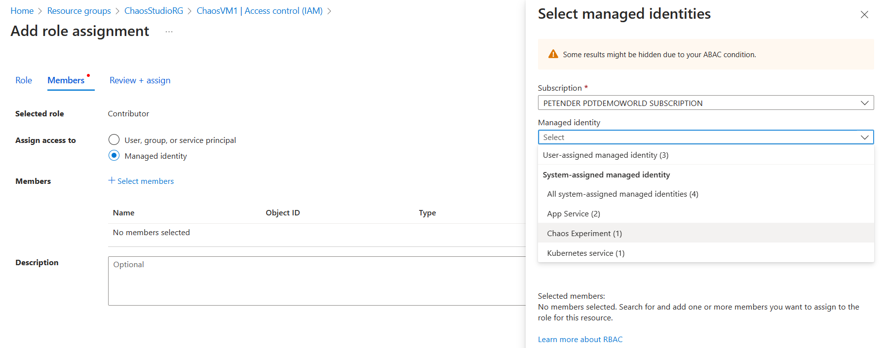
- With the permissions allocated, navigate back to the CPUSpike Experiment in the Chaos Studio blade, and click Run.
The Experiment Task will start, and run for 10 minutes.
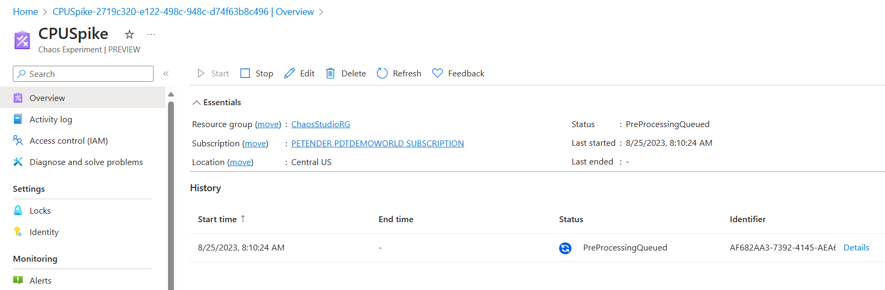
- Wait for the Experiment to change to Running state.
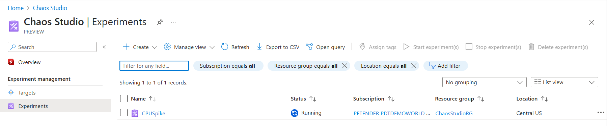
- With the experiment running, navigate to the Azure VM your testing against, and open its Metrics. From the Metrics blade, select Percent CPU under Metric in the graph, and watch the real-time CPU load.
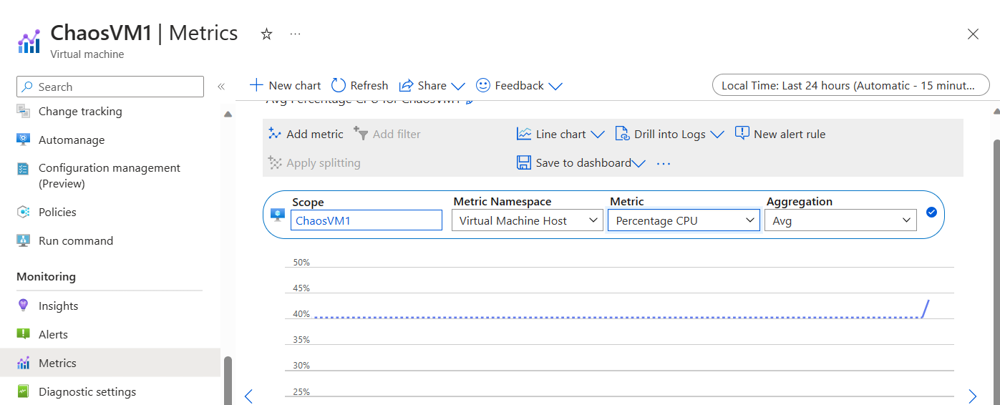
- Repeat this process every couple of minutes, and see how the CPU load is gradually spiking, eventually reaching 95% for a certain amount of time.
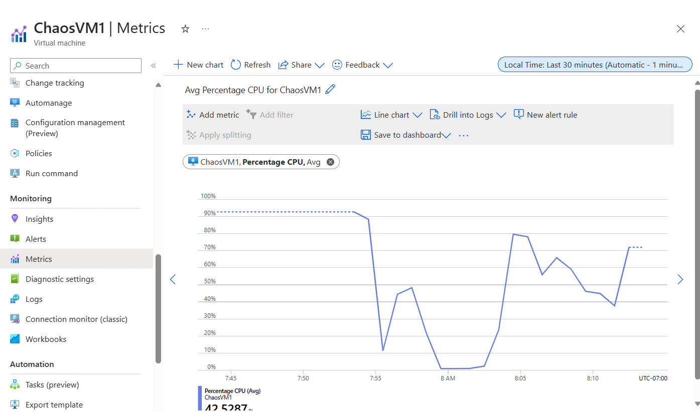
- Wait for the CPUSpike Experiment to complete successfully.
Summary
In this article, you learned about Chaos Engineering, how Netflix created Chaos Monkey as the foundation of Chaos Engineering, and how Azure Chaos Studio allows for Chaos-testing of your Azure Resources.
For now, you learned how to deploy Chaos Studio, and how to enable an Azure VM as a Chaos Target, followed by how to create and run a Virtual Machine CPUSpike experiment.
In a later follow-up article, I will show you how to use Chaos Studio Experiments against an Azure Kubernetes Cluster, as well as a Network Security Group.
I hope this article spiced your interest for Azure Chaos Studio. Go out and experiment with it, and let me know how it goes!

Cheers!!
/Peter